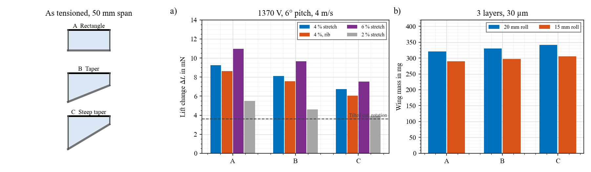
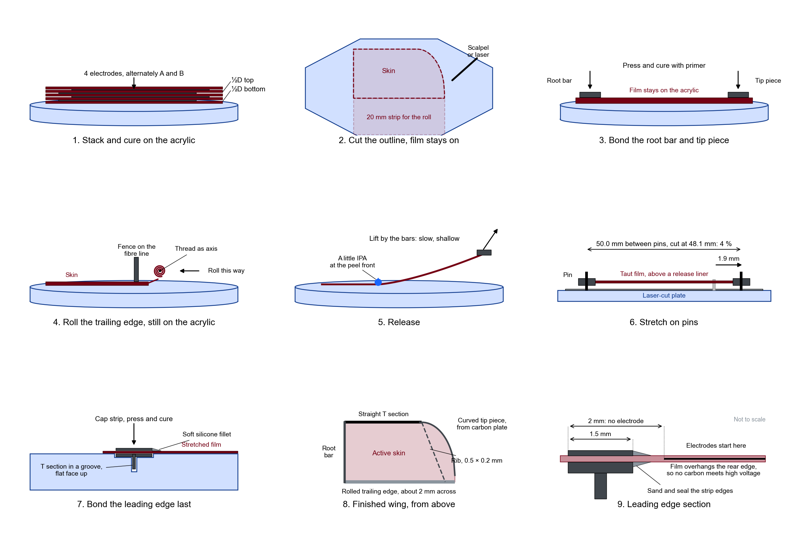
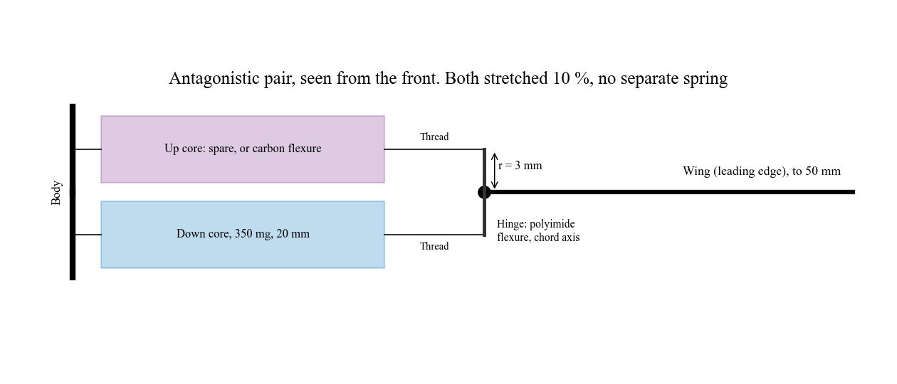

One wing side, built today and characterised; transmission, assembly and tests tomorrow. Named for the bumblebee bat and Bat Bot.
First bench result, 4 Nov: the trailing edge moves the opposite way to this model, and lift change may be well below the numbers here (skin $\eta$ 0.5 was assumed). See First wing test.
Everything here is a model prediction or an untested proposal, unless marked as bench. Print the masks at scale and check them against your plates before cutting. Background: Flittermouse study.
What to build
Part
Stack
Filters
Wing A, rectangle: the control
4 electrodes, 3 active layers
4
Wing B, curved tip, stiff edge
4 electrodes
4
Wing C, curved tip, soft edge with a diagonal rib: the experiment
4 electrodes, same mask as B
4
Core 1, two strips rolled as one, about 350 mg
5 electrodes
5
Core 2, the same: second core or spare
5 electrodes
5
Total
22 of 24
If time runs short: build wing A and core 1 first. Those two give a full test tomorrow.
Before spending electrodes: run one blank sheet with no electrodes, through the release and stretch steps.
Rib: not a separate sheet. Glue it on after the first tests, so one wing gives both results.
Voltage: 1370 V at 30 µm is the field used throughout (46 V/µm). The rectangle did not settle at 1.6 kV at 6°, so start low and ramp.
Masks
Same 114 mm plates and holes as your earlier masks. Each file holds four plates, A and B for each of two parts. Use electrodes alternately A, B, A, B.
53.9 mm; 62 mm along the fibre, check your usable area
1037 mm²
Core, 2 strips
55 × 23 mm each, 3 mm offset leaves 20 mm active
49 mm
2120 mm²
Margins: 2 mm at the leading edge, 1.5 mm at root and tip, 1 mm on the strip. These are my judgement.
Roll: 20 mm strip, passive, with a 4.8 mm contact tab at each end. An active band added almost nothing once the skin is stretched (8.07 against 7.80 mN), so this mask leaves it out.
Lighter option, no new mask: trim the strip to 15 mm before rolling.
Wing designs
No root bar: pull the end of the roll
Lift change at 6°, thread of fixed length, pull of
Trend: tension is set by travel, and there is a window at about 4–5 mm. At 3 mm, authority is down by half or more. By 8 mm, nearly all of it has gone.
*Rectangle: near its peak, one of the two meshes failed at each pull. The solver lost the mesh at the root corner, so treat these as roughly 10 mN. The curved tip agrees across meshes.
Thread, not spring: a soft line gave erratic results, with 0 V lift jumping from 4.6 to 11.5 mN at the same force. A fixed thread and a stop should behave better. Hold the end by position, not force.
Cost against a root bar: about 50–65 % of the skin is wrinkled at 0 V (1 % with a bar and stretch), with more bulge at 0 V (4.6 against 1.3 mm) and less lift at 0 V at the best pull.
Not modelled: a free root edge may flutter. No flapping run for this wing yet. Tearing: see below.
Span: these runs use a 50 mm sheet with no stretch. The masks cut 48.1 mm, for the 4 % route, so with no stretch this wing comes out about 48 mm. That is close enough for a first build.
Validate: pull in 1 mm steps on the bench and record force and bulge at voltage. Expect the peak near 4–5 mm.
With a root bar and 4 % stretch: the fallback

Wing
Lift change, 4 % stretch
With rib
Wing mass
Purpose
A, rectangle, stiff tip bar
9.2 mN
8.6 mN
321 mg
Most authority, simplest: the control
B, curved from 35 mm, stiff edge
7.7 mN
6.3 mN
About 330 mg
4 % less inertia, no sharp tip corner
C, curved, soft edge, diagonal rib
About 6.2–6.5 mN, not converged
About 310 mg
Lightest tip, a floppy outer panel. Your idea, as an experiment
Taper 35→15, stiff tip
8.1 mN
7.6 mN
330 mg
Option, 7 % less inertia
Steep taper 40→10, stiff tip
6.7 mN
6.0 mN
341 mg
Option, nearest the pterosaur shape
Does the outer edge need to be stiff? Yes, unless a rib replaces it. A rectangle with a free tip does not settle, and a curved soft edge with no rib collapses (fibre force about 1 mN). With a diagonal rib from the start of the curve, the wing holds its shape and force in the solver, without fully settling, and with up to 2.7–4.3 mm of bulge at 0 V.
Rib angle: with a stiff edge, ending it at 70, 85 or 100 % of span gives 6.2, 6.3, 6.4 mN. So it is not critical. A rib from further inboard costs more: curve from 25 mm with its rib, 4.8 mN.
Curve start: from 25, 35, 40 mm gives 7.8, 7.7, 7.4 mN, with chord adjusted to keep about 12.4 cm². A stiff curved edge here means rigid in the model. A real 0.2 mm plate lies between B and C.
Tip piece: flat strips will not curve in-plane, so cut it from 0.2 mm carbon plate, about 2 mm wide, and overlap the straight T section by 3–5 mm.
Correction: the taper won on the Flittermouse page only because the rotated skin was about 65 % wrinkled. With a stretched skin, the rectangle wins.
Triangle: a true triangle does settle (4.0 mN against 5.2 mN for the 35→15 taper, both 2 layers with rotation), but it does not fit the coater with a 20 mm roll. Wing C is the closest that fits.
Grip: stretching needs something to pull on at the tip. A and B have it built in. For C, leave a film tab past the tip with a temporary bar, and trim it once the leading edge is bonded.
Curved edge in the model: rigid or free only. A soft edge was not solved to a steady state, so test it rather than trust the number.
Limits: steady, 4 m/s. Flapping numbers and lift / weight on the Flittermouse page used rotation tensions and have not been rerun for stretched skin.
Validate: static panel at 4 m/s, or bulge at voltage: expect a peak of about 1.3 mm at 0 V and 5.6 mm at 1370 V in flow.
Will it tear?
Steady finite elements with no root bar, roll end on a fixed thread, 4 m/s. Datasheet values are from a third-party listing of P7670 (1.8 MPa, 600 % elongation, tear strength 2.1 kN/m, bulk), so confirm them with Wacker's sheet.
Pull
Typical skin stretch
Peak, at the thread corner
Peak stress
Tear drive, 1 mm cut there
Curved tip, 5 mm
1.05 (95 % below 1.12)
1.26–1.28
55–58 kPa
About 45 J/m²
Rectangle, 5 mm
1.04 (95 % below 1.11)
1.56–1.59
100–105 kPa
155–170 J/m²
Curved tip, 8 mm
1.08
1.44
About 83 kPa
About 105 J/m²
Equation: tear drive $G = 2 k W a$ with $k = \pi/\sqrt{\lambda}$, strain energy density $W$ at that point, and cut length $a$ (Rivlin and Thomas).
Trend, intact skin: the worst stress is about 20× below the listed strength. Thickness barely changes these numbers: 2 and 4 layers differ by about 3 %. So thin film is not itself the risk.
Where it will tear: nicks from handling, cut edges, and the corner where the thread pulls, where the curved tip has clearly less peak stretch than the rectangle. The peak is a corner singularity, so its exact value depends on the mesh. Read it as a comparison.
Repeated load: rubbers can grow a crack under cycling at a far lower tear drive than the static tear strength. I have no fatigue number for P7670, so a nick at the corner could grow over many cycles. 25 Hz is 90,000 cycles an hour.
2 or 4 layers: 4 layers gives more lift change at the same pull (12.2 against 5.0 mN at 4 mm on the rectangle; 8.1 against 5.4 on the curved tip), about 60 % more thread force, and more mass. The best pull is about 4 mm for 4 layers and 5–6 mm for 2.
Validate: pull a sacrificial wing to failure, intact and with a 1 mm nick at the corner. That replaces the listed values with yours.
Does thicker hurt displacement? Only if the extra film is dead. More active layers keep the same bulge at voltage (about 4.5 mm), because tension and Maxwell stress grow together. So 4 electrodes is a good choice: stronger to handle, and no loss of authority.
How much stretch: 2, 4, 6 % give 5.5, 9.2, 11.0 mN at 3 layers. The mask is cut for 4 %, and you can pull it further on the same mask. 4 % is 1.9 mm of travel, far less than the 1.1× you have already pulled on earlier wings.
Chord stretch: not needed. These masks and numbers use none, which removes a step. The cost is more camber at 0 V.
Hot bonding, if handling fails: silicone shrinks far more than carbon on cooling, so a frame bonded hot should leave biaxial tension with no pulling. Models: 1, 2, 3 % biaxial give 3.8, 5.1, 7.0 mN at 2 layers, all above rotation. My estimate is about 1 % from 60 °C, using a thermal expansion of about 3×10⁻⁴/K from memory. Measure it: mark two points and compare before and after cooling.
Wing steps: never hold the film
No root bar: the leading edge goes on while the film is still on the acrylic, and it becomes the handle. Tension comes from pulling the root end of the roll. This extends your pterosaur process. Proposed, untested on this wing.

Each step as its own file: 123456789 (SVG, with PNG alongside), or all in one SVG. Fallback route with a root bar and stretch: PNG, SVG.
Stack and cure as usual, on acrylic. Use a thicker top half-D if the surface stays tacky, and cure fully before going on.
Cut the outline on the acrylic, with the carrier still on.
Bond the leading edge frame (T section, plus tip piece or tip bar, glued together first) onto the film on the acrylic, with primer, press and cure. No stretch.
Roll the trailing edge on the acrylic: free edge first, a fine thread as the axis, stop at a fence on the fibre line. Glue the roll's tip end to the tip piece. Keep the glue from wicking along the fibre.
Release: lift by the frame, at a shallow angle, slowly, with a little IPA at the peel front. Test IPA on the blank sheet first. If two sticky faces touch, IPA also helps part them.
Pull the roll end by a thread on its cap, 4–5 mm, against a hard stop. Check the force: about 50 mN. Stop well short of 8 mm.
Add the cap strip from below, with a soft fillet.
Tie off: thread to the body, with the eye on the stroke axis at the same chord, so its length stays constant through the stroke.
Tack: keep tacky faces on PTFE or release liner, not paper or acrylic. Your earlier wings suffered from frame delamination: test the bond on the blank sheet by pulling on a bar.
Later batches: spin on a thin PET sheet taped to the acrylic. Then you peel by bending the carrier, not the film.
Leading edge on a flat strip
Make the T section first: glue the two strips on a straight edge, one flat and one on its edge. Reject any that bow. The flat face goes on the film.
Sandwich the film: T section on top, from step 3, and a thin cap strip on the underside after release (1.5 × 0.1 mm, about 12 mg). Peel at the strip's edge is what tears; a sandwich turns it into shear. Skip the cap on wing A if time is short, and compare.
Fillet: leave a small bead of soft silicone at the strip's rear edge, so the film does not bend sharply over a corner.
Shorts: you found these deadly to the DEA. The strip is 1.5 mm and the electrode margin 2 mm, so film should overhang the strip's rear edge by 0.5 mm or more with no electrode on it. Check under the microscope. Sand strip edges and seal them, with polyimide tape or a primer and silicone coat.
Stick: your primer + press + cure. Measured bead width, stencilled if possible, and a straight weighted bar on top.
Wrap with thread: you tried this in July 2026, and it is heavier. The sandwich avoids it.
Core DEA
Why two strips per core: one 5-electrode strip is about 180 mg, 3.4 mm across. Two strips rolled together are about 350 mg, 4.7 mm across. The earlier sizing asked for 500 mg or more for ±20° at 25 Hz, so this is a test core, not a flight core.
How: roll strip 1, butt strip 2 against its end, and carry on rolling. Keep A and B tabs on the same ends, so one cap connects both strips. Check capacitance after rolling, to catch a lost strip.
Caps: as your rolled DEAs: carbon caps with copper wire. Add a thread eye on each, centred, since a side pull will bend the core.
To go bigger: 7 electrodes gives about 250 mg per strip, 500 mg per core. That would need 14 filters, and 24 would not cover three wings as well.
Characterise today
Measure
Wing, 3 layers
Core, 2 strips
If not
Mass
About 280 mg before the leading edge
About 350 mg
Thicker film than planned
Capacitance, from area, $\varepsilon_r$ 2.8, 30 µm
About 2.6 nF
About 7 nF, up to 8.8 once rolled
Low: a layer is not connected. High: thinner film
Leakage, ramp to 1370 V
Stable, no sparks after clearing
Same
Look for bubbles
Force at 10 % stretch, 0 V
About 390 mN
Updates $C_1$
Force drop at voltage
246 mN isometric, 95 mN if slow-cycle force holds (bench scaling)
Sets the real stroke
Fibre force, or pluck
About 24 mN; first mode somewhere around 30–50 Hz (not computed for this stack)
Check the stretch
Response at 1, 5, 25 Hz
Bulge or force, voltage at the device
Force
Gives the lag: the timing work needs 5–10 ms or less
Transmission, tomorrow

Do you need a spring? You need a return force and a stiffness that sets the resonance. A 20 mm core only pulls: it would buckle in compression. A second core does both jobs with no extra part.
Equations: stroke $\phi \approx$ core travel $/ r$. Resonance $f = \frac{1}{2\pi}\sqrt{k_t / I}$, where $k_t = 2 k r^2$ for two cores, $k \approx$ 178 N/m each at 350 mg, and $I \approx$ 2.5×10⁻⁷ kg m² for the wing.
Pick $r$: a bigger lever raises the resonance and lowers the stroke.
$r$
Resonance
Stroke, isometric force
Stroke, slow-cycle force
2.5 mm
15 Hz
±20°
±11°
3 mm
18 Hz
±18°
±10°
3.5 mm
21 Hz
±16°
±9°
4 mm
24 Hz
±15°
±8°
Build: one core driven, one passive, both stretched 10 % (2 mm) on assembly. Driving both risks slack in the model, so try it later. These assume 350 mg cores and the stiff-rib wing's air power.
Hinge: polyimide flexure, 25 µm thick, 1 mm long, across the leading edge width. Its stiffness is negligible here. It sees up to about 1 N in pull from the cores, so make it wide, with two pieces if needed.
Lever: carbon strip bonded square across the leading edge root, with a hole 3 mm above and below the hinge.
Link: short, low-stretch braided thread from the cap to the lever, glued at a knot. It stays in tension as long as the core does not go slack. Stiffer than the core by far: watch for stretch in nylon.
With one core only: replace the upper core with a carbon flexure, 0.1 × 2 mm, about 13 mm long ($k_t \approx$ 1.6 mN m/rad), bent so it holds the core's 10 %. That is about 42° of pre-bend, about 0.4 % strain at the extreme.
Tune: sweep frequency at low voltage and find the peak first, with a dummy mass in place of the wing. Then the wing at 0 V flow off, and only then at full voltage.
Timing: keep the skin on its own channel for the first tests, so you can swap the phase with no rebuild. Voltage on the lower core slackens the pull, so the wing rises: on one shared channel that gives the bat timing, soft and rising together.
Heavy trailing edge
The 20 mm roll is 96 mg at 2 layers (about 128 mg at 3), against 43 mg for the cross. The centre of mass sits near 60 % chord. Coupled model, with rotation tensions.
Wing, 25 Hz, ±30°
First mode, 0 V / voltage on
Trailing edge swing at mid span
Lift, air power
Plain, roll inertia ×0.5
43 / 33 Hz
±5.5 mm
7.8 mN, 49 mW
Plain, full roll
34 / 27 Hz
±7.4 mm
7.9 mN, 51 mW
Plain, roll inertia ×2
25 / 19 Hz
±9.9 mm
8.3 mN, 51 mW
One stiff rib, full roll
53 / 45 Hz
±2.7 mm
6.9 mN, 36 mW
Trend: a heavy edge does not cost much lift or power in the model. It lowers the first mode onto the flapping frequency and makes the edge swing more. A rib halves the fibre's span and clears that.
What the model leaves out: leading edge torsion and classical flutter. A centre of mass behind the leading edge is the textbook flutter setup, so treat it as a real risk.
In practice: watch the edge with the high-speed camera. Stay below the first mode at first. If it flutters, add the rib, then trim the roll to 15 mm (8.4 against 9.2 mN, 31 mg lighter).
Validate: pluck the wing and compare with these modes, at 0 V and at voltage. The voltage-on mode at or below the flapping frequency is the warning sign.
Flittermouse: the full study. Code: flittermouse/wing_shape.py, build_study.py, stretch_check.py, poc_cases.py, transmission.py, te_modes.py, masks_bcube.py.